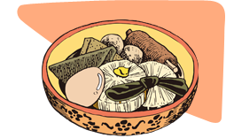

2020年1月号
「おでん」の知られざる世界（part2）

さて、今月も先月に引き続き、「おでん」のお話しです。
江戸で流行った、食材を煮込み、直前に味噌をつけて食べる「煮込み田楽」＝「おでん」ですが、その後、明治時代には汁気の多い「おでん」に進化していき、それが大正時代、関西地方に伝わりました。
東京の料理人によって大阪に持ち込まれた「煮込みおでん」は、「味噌だれのおでん」と区別するため「関東煮（かんとうだき、かんとだき）」と呼ばれるようになったといわれていますが、これには諸説あり、中国料理から着想した「広東煮（かんとだき）」であるともいわれているようです。
それはさておき、「おでん」は、さらに進化を続け、全国各地にいろいろな「ご当地おでん」が発展していきます。
有名なところでは、黒はんぺんに、だし粉（かつお節の粉）、青のりをかける「静岡おでん」、鯨の皮（コロ）やさえずりなどの鯨種が入る「関西風」、八丁味噌の真っ黒なつゆの「名古屋風」、豚足をメインとした「沖縄風」など、全国各地でご当地おでんが賞味されています。
今では、「冷やしおでん」なども登場し、冬だけではなく、1年中、いつでも食べたいファストフードとして進化し続けています。
世界に誇る「日本のソウルフード」＝「おでん」！
是非、皆さんも、「ご当地おでん」や、食べたことのない「おでんネタ」に挑戦してみてはいかがでしょう！！
 次月号へ
次月号へ